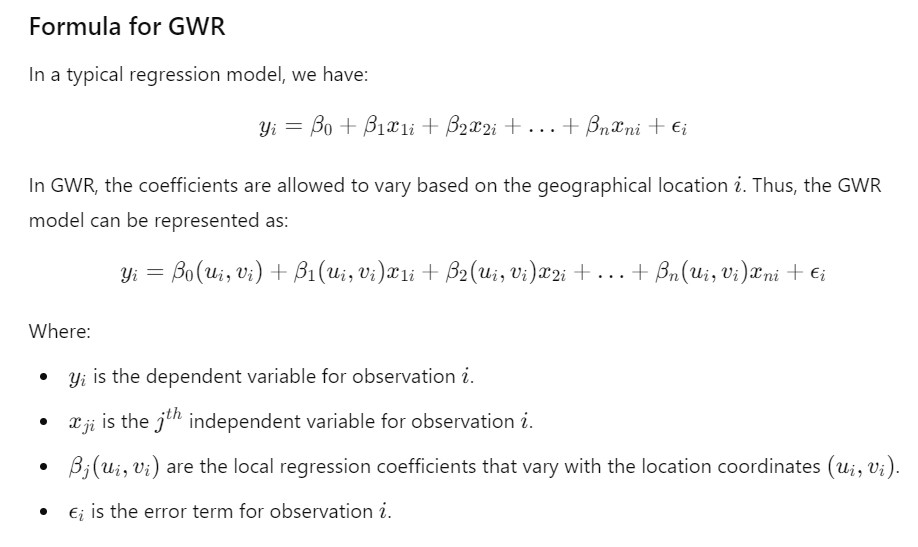

Data Management
Sales Data Integration from RPIS
Sales Data Migration from other RPTA
Sales Data Cleansing
Sales Data Validation
Sketch
Valuation
Traditional
Market Approach
Cost Approach
Income Approach
Artificial Intelligence
Multiple Regression Analysis
Artificial Neural Networks
Expert & Decision Support System
Tree Based
Hierarchical
Clustered Analysis
Rough Set
Fuzzy Logic
Genetic Algorithm
Support Vector Machine
Data Envelopment
Conformal Predictor
Geostatistical
Geographically Weighted Regression

Geographically Weighted Principal Component
Spatial Error Model
Spatial Lag Model
Location Value Response Surface
Mix
SMV Development
Initialization
Urban Lands
Agricultural Lands
Other Land Types
Base Unit Construction Cost
SMV Review
Submit SMV
Table of Contents
Barangay List
Kanluran
Silangan
Section
Kanluran
Silangan
-
Lot Value Map
-
Brgy. Boundary
Landmarks
Road
Base Map
Satellite
Aerial